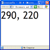
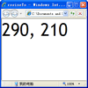
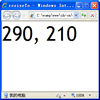
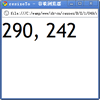

BX1049: 各浏览器通过 window.resizeTo() 方法最终得到的页面可视区域大小存在差异
标准参考
无。
问题描述
虽然所有主流浏览器均支持 window.resizeTo() 方法，但由于各浏览器地址栏、状态栏等尺寸不同，以及对诸如 window.open() 这类方法的支持存在差异，导致通过 window.resizeTo() 方法最终得到的页面可视区域大小存在差异。
造成的影响
若通过 window.resizeTo() 方法调整了窗口外边尺寸的页面布局依赖于某些浏览器下窗口可视区域大小，则可能造成其他浏览器中此页面布局出现差异。
受影响的浏览器
| 所有浏览器 |
|---|
问题分析
window.resizeTo() 方法可以通过传入表示宽度和高度的两个整型参数来控制当前 window 对象对应的浏览器窗口的外边尺寸，这个尺寸包括浏览器窗口的标题栏及窗口边框。
虽然 window.resizeTo() 方法目前不属于任何规范，但所有的主流浏览器均支持此方法。
更多关于 window.resizeTo() 方法的信息，参见 MSDN resizeTo Method 及 Mozilla Developer Center window.resizeTo 中的内容。
测试代码：resizeToParent.html
<a href="javascript:void 0;" onclick="window.open('resizeTo.html','','width=300,height=300,location=yes,menubar=no,status=yes,toolbar=no')">resizeTo</a>
测试代码：resizeTo.html
<!DOCTYPE html>
<html>
<head>
<title>resizeTo</title>
<style>
html, body { margin:0; padding:0; width:100%; height:100%; font:60px 'Trebuchet MS'; }
</style>
<script>
window.resizeTo(300, 300);
window.onload = window.onresize = function () {
document.body.innerHTML = document.body.clientWidth + ', ' + document.body.clientHeight;
}
</script>
</head>
<body>
</body>
</html>
运行 resizeToParent.html，点击超链接，将弹出一个子窗口，这里通过 window.open() 方法统一使子窗口只显示地址栏与状态栏。子窗口 resizeTo.html 中通过 window.resizeTo() 方法使页面窗口尺寸定为 300px * 300px。最后计算重新调整尺寸后的子窗口的可视区域。
各浏览器中运行效果如下：
| IE6 | IE71 | IE81 | Firefox | Chrome | Safari | Opera |
|---|---|---|---|---|---|---|
|  |  |  |  |
 |  |
 |
虽然通过 window.open() 方法设定了子窗口仅显示地址栏与状态栏，但由于各浏览器地址栏与状态栏的尺寸不同 (Chrome 不具备地址栏)，而整个窗口的外边尺寸又均为 300px * 300px，这导致各浏览器子窗口内的可视区域出现差异。
而 Opera 中子窗口并不是一个原生独立的窗口导致子窗口可视区域与其他浏览器相差甚远。
同时，各浏览器对于 window.open() 方法窗口特征 sFeatures 参数支持程度存在差异，这也进一步导致了通过 window.resizeTo() 方法重新调整后的子窗口内可视区域大小在不同浏览器之间出现很大数值差异。
注 1: IE7 IE8 对于子窗口的显示与浏览器选项卡设置有关，这里全部使用浏览器缺省值。
下面查看若直接运行 resizeTo.html 页面，各浏览器对窗口内可视区域的计算结果：
| IE6 IE7 IE8 Firefox | Chrome | Safari1 | Opera |
|---|---|---|---|
| 可以调整2 | 不可以调整 | 可以调整 | 不可以调整 |
注 1: Safari 中若移动窗口，则窗口的外边宽度会变为 350px。
注 2: IE7 IE8 开启了多选项卡浏览后，若当前浏览器窗口已开有其他选项卡，此时可能不可以调整尺寸。
解决方案
使用 window.resizeTo() 方法时需谨慎，不要使被调整窗口尺寸的页面内布局完全依赖于某些浏览器中可视区域的大小。
参见
知识库
相关问题
测试环境
| 操作系统版本: | Windows XP Professional SP3 |
|---|---|
| 浏览器版本: |
IE6 IE7 IE8 Firefox 3.6.10 Chrome 8.0.552.0 dev Safari 5.0.2 Opera 10.63 |
| 测试页面: | resizeToParent.html resizeTo.html |
| 本文更新时间: | 2010-10-13 |
关键字
resizeTo width height